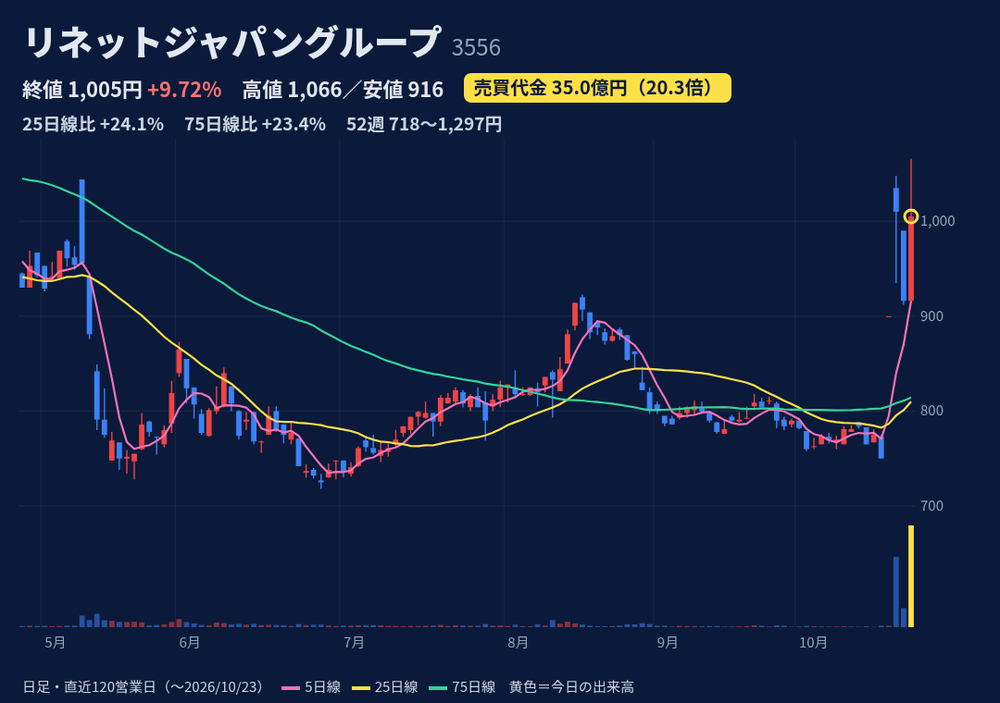
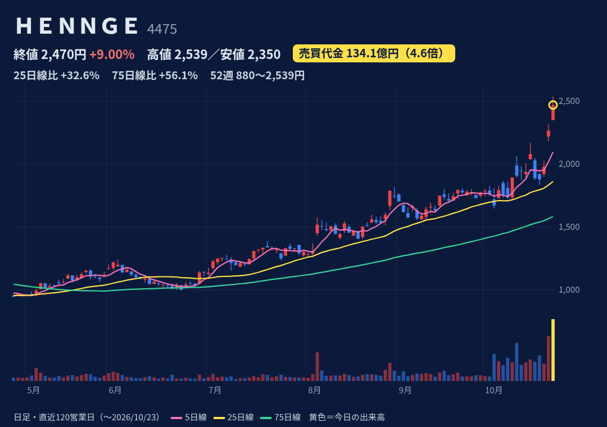
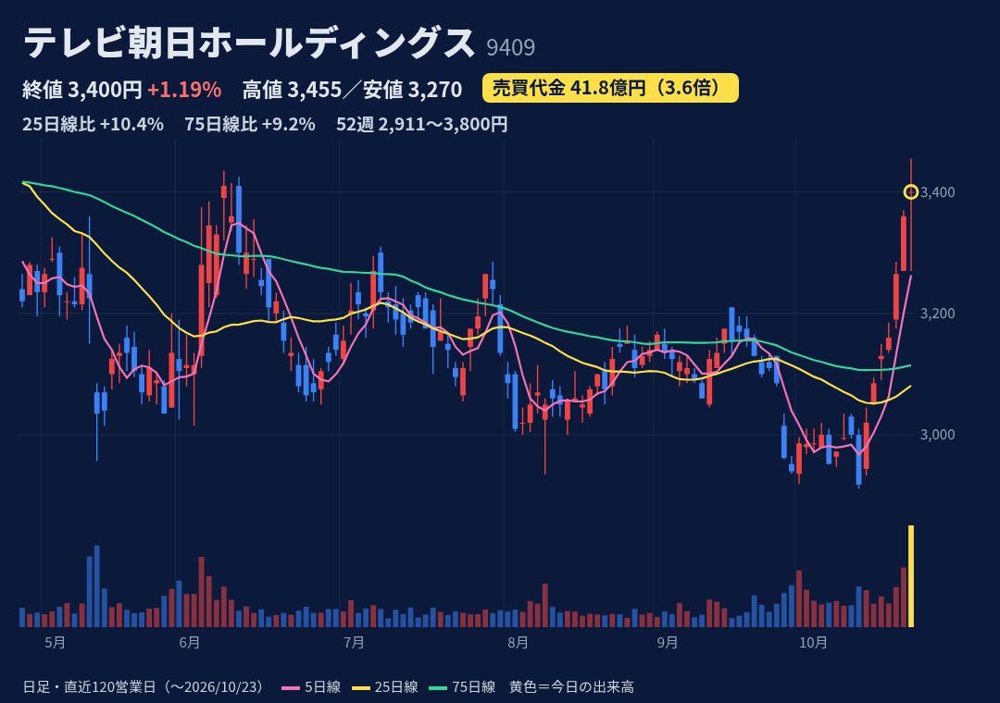
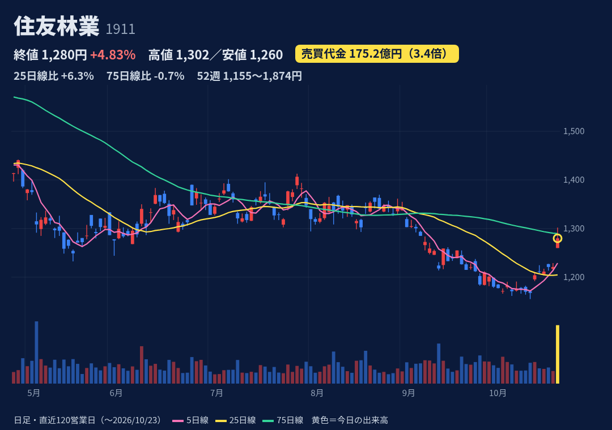
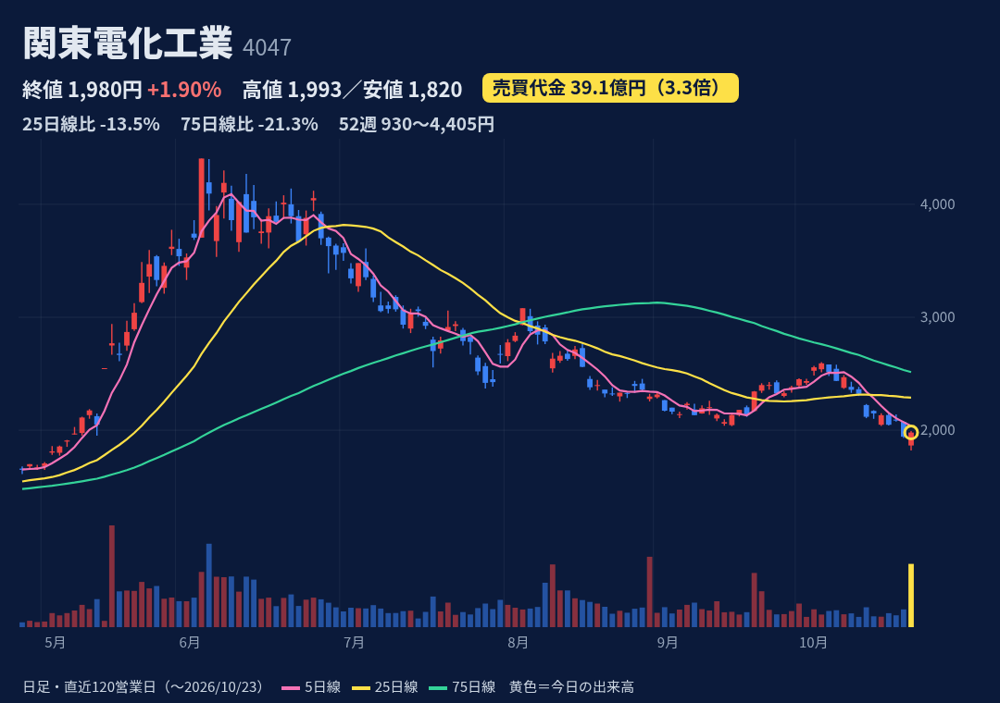

ネットオフ（中古リユース）、宅配便で回収する小型家電・PCリサイクル、障がい福祉。全国770超の自治体と連携。
10/22 15:30、子会社が東京都「希少資源緊急回収プロジェクト」パソコン回収事業に採択とPR発表（10/23〜27年1/29、先着8万台のデータ消去費を都が全額補助）。業績影響の記載なし。前提に10/19の資本業務提携。
9月期3Q累計：売上108億(+37.5%)、営業益10.1億(前年2.1億)。通期予想 売上162億・営業益17億で進捗60%（4Qに6.9億必要）。本決算は11/13予定（会社情報サイト）。
始値916(前日終値と同値)→高値1,066でS高到達→終値1,005。上ヒゲ長め（値幅の約4割）の陽線。52週高値1,297(1/15)・安値718(6/26)の中間。25日線+24%、75日線+23%。
10/22時点 買残97.8万株(10/16比+13.0万株)・売残800株、倍率約1,200倍。制度信用のみ（貸借でない）。買残は20日平均出来高の約5.5日分。日々公表・増担保は確認できず。
小型グロース株。第三者割当で最大37.9%希薄化（新株299万株@718円は11/5〜12/4払込、予約権258万株は行使価額1,077/1,436円）。1月にも急騰→10日後−13%の前例。24/9期は営業赤字。
出典：

企業向けクラウドのアクセス制御・メールセキュリティ「HENNGE One」を提供するSaaS企業。
10/23当日の新規材料は確認できず。前日10/22はPHP脆弱性によるセキュリティ株買い＋公募株受渡(10/20)通過後の需給改善期待（フィスコ）。10/20付でプライム移行。TDnetに10/23開示なし。
9月期3Q累計：売上93.9億(+17.1%)、営業益18.5億(+17.3%)。通期予想 営業益20.57億で進捗90%。10/2に配当予想6→11円。本決算は11/5予定（株予報）。
始値2,350(GU)→高値2,539→終値2,470の陽線、上ヒゲは値幅の約37%。52週高値を更新（安値880円は2/24）。25日線+33%、75日線+56%。3日続伸で5日+19%。
10/22時点 買残114.9万株・売残38.9万株、倍率2.96倍（10/16は2.05倍）。売残は10/20に約半減。日証金の注意喚起(10/2)・規制理由で日々公表（最新は10/16分）。東証の増担保は確認できず。
PER約47倍・PBR約20倍（J-Quants）と割高圏。公募110万株（PO価格1,831円）で希薄化済み、現値はPO価格の+35%。10/23は同テーマのソリトン・FFRI等が大幅安で、テーマ相場の反動に注意。
出典：

テレビ朝日を中核とする認定放送持株会社。地上波・BS・配信、イベントなどを展開。
材料は確認できず（TDnet開示なし、報道も見当たらず）。同日、日テレHD(+1.6%・代金倍率高め)やTBS(+1.9%)も上昇。内需・ディフェンシブへの資金シフトの一環とみる見方は推測にとどまる。
3月期1Q：売上813.9億(+1.1%)、営業益37.9億(−48.0%)。通期予想 営業益200億(前期262億、−24%)で進捗19%。中間決算は11/12予定（株予報・Yahoo!）。
始値3,400→高値3,455→安値3,270→終値3,400の十字線（迷い）。7日続伸、安値から+17%。52週高値3,800(2/13)まで−10.5%。25日線+10%、75日線+9%、200日線(3,250)も上回る。
10/22時点 買残46.8万株・売残2.8万株、倍率約17倍（10/16は約21倍）。売残が増加傾向。日々公表・増担保は確認できず。
材料不明の上昇。1Q大幅減益・通期減益予想。みんかぶのアナリスト平均目標は約3,141円（10/11時点）で現値を下回る。代金3倍超の日は過去1年で今日を含め3日だけで、急騰の前例はない。
出典：

木造注文住宅・木材建材に加え、米国などでの住宅分譲が主力。売上の6割超が海外。
前日の米国でレナー、DRホートン等の住宅株が大幅高、米10年債利回りが約1カ月ぶりに5%割れ→金利に敏感な住宅関連として連れ高（フィスコ10/23）。会社の開示はなし。
12月期1H：売上1兆2,632億(+17.5%)、営業益599億(−27.8%)。8/7に通期営業益1,570→1,430億、純益950→600億へ下方修正。進捗42%。3Q決算は11/5予定。
始値1,260(GU)→高値1,302→終値1,280、上ヒゲが値幅の約半分。10/15に52週安値1,155、高値1,874.5(2/18)から−32%と安値圏。25日線は+6%だが75日線(1,290)・200日線(1,411)は下回る。
10/22時点 買残414.5万株・売残9.4万株、倍率約44倍。買残は10/16(429.7万株)から漸減。日々公表・増担保は確認できず。
株価は米金利・米住宅株に連動しやすい。8月に通期大幅下方修正。信用買残が多く戻り売りが出やすい需給。過去1年に代金急増を伴う急騰の前例はなし。
出典：

フッ素系の半導体向け特殊ガスと、リチウムイオン電池材料などを手がける化学メーカー。
10/22 15:30に今期2度目の上方修正（TDnet）。上期営業益66→94億、通期113→146億（前期の2.7倍）。特殊ガス増収と値上げ浸透、値上がり前の在庫による押し上げ。下期はその効果が薄まる前提。
3月期1Q：売上197.7億(+30.6%)、営業益39.8億(前年7.8億)。修正後の上期営業益94億・通期146億から計算すると下期は約52億で上期より減る。中間決算は11/10予定（株予報）。
始値1,865(前日比−4%)→安値1,820→高値1,993→終値1,980。長い下ヒゲの陽線で高値近くで引け。ただ25日線−14%、75日線−21%、6/4の52週高値4,405から−55%と下落基調の中。
10/22時点 買残112.0万株・売残3.8万株、倍率約29倍（10/16は約37倍）。買残は20日平均出来高の約2.2日分。日々公表・増担保は確認できず。
修正は在庫の受払差による一時的な押し上げを含み、会社は下期に効果が薄まると明記。2度目の修正で出尽くし感との報道。半導体株の地合いに左右される。
出典：
株価・出来高・信用残：取引所データ。材料：各社開示・各社報道。